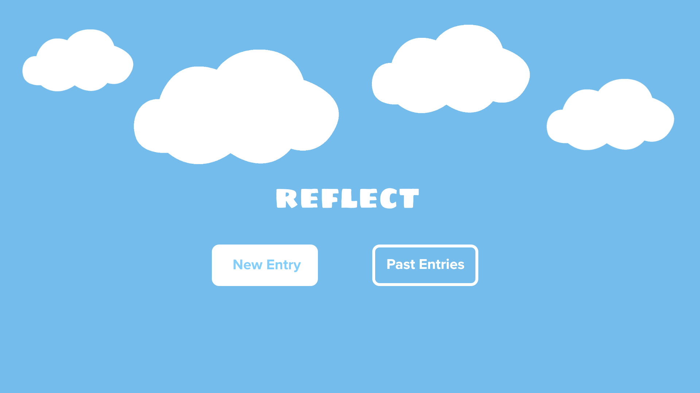
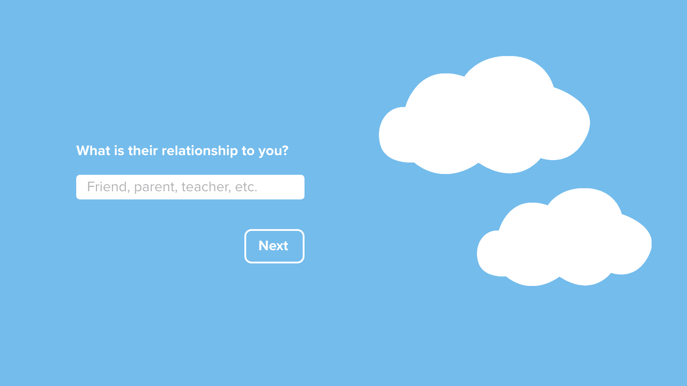
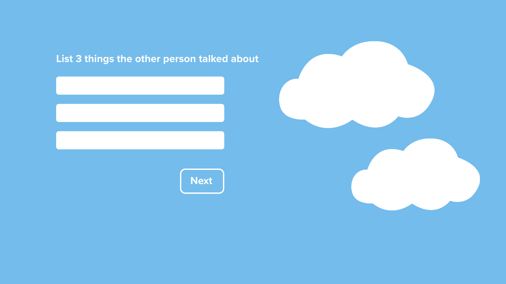
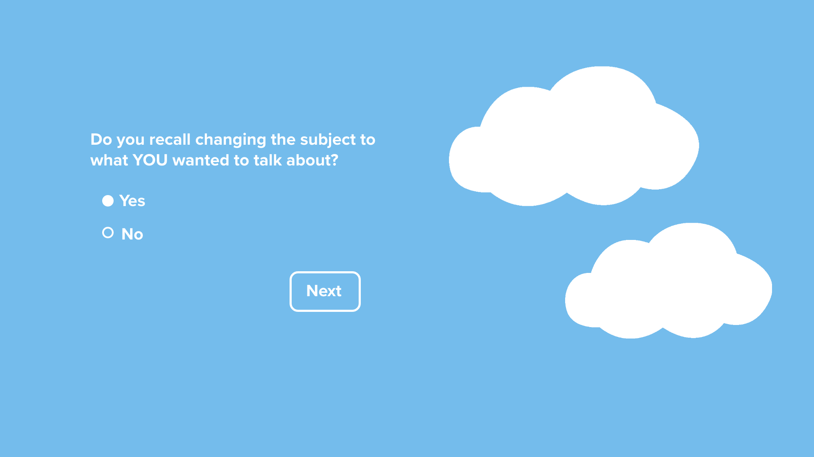
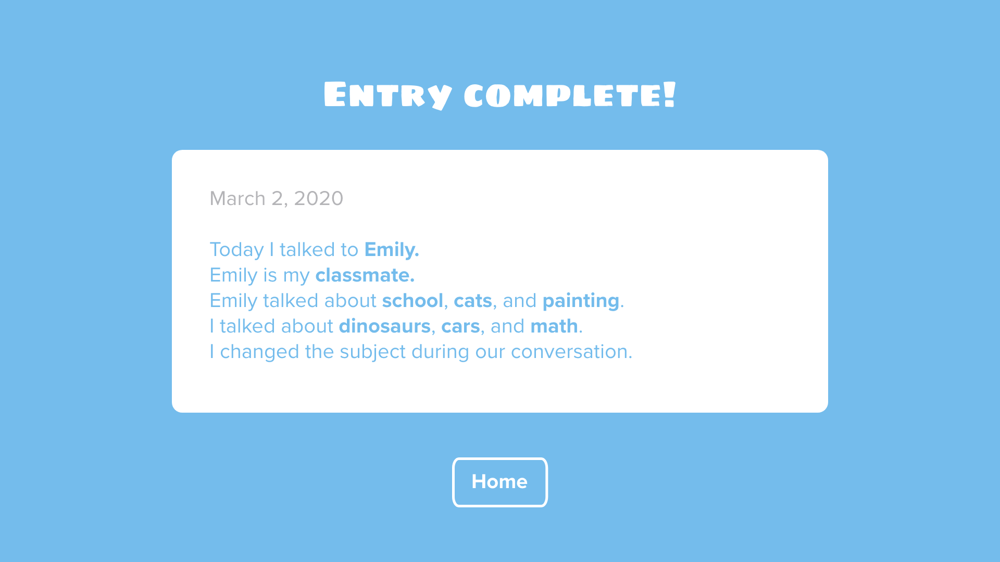

Hai Yu Zhao
Final Project Design Comp V1
Since people on the autism spectrum tend to struggle with sensory overload, I wanted the visual design of my website to be as minimal and calming as possible. After some research, I learned that cool colors like blue and green, espcially shades that are duller, have a calming and soothing effect for autistic individuals. Therefore, I chose a dull sky blue as the background and added a few cloud images to simulate staring up at a blue sky with fluffy white clouds - one of the most relaxing experiences for me. I also designed my application to only display one question at a time because autistic individuals are most comfortable when there is just one thing to focus on at a time.
    